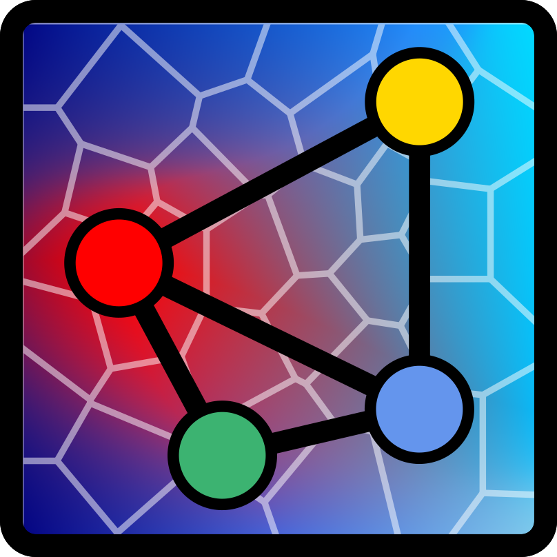

Announcing the Transport Phenomena in Materials Team
Published on 2026/07/28 by Murilo Henrique Moreira.
In February 2026, I started a new position as an assistant professor in the Department of Materials Engineering at the Federal University of São Carlos (UFSCar). It was a dream that came true. With that comes the opportunity (and responsibility) of starting my own research group: The Transport Phenomena in Materials Team (TPMaT).
When I was an undergraduate researcher I studied the application of statistical models in refractory materials. It was the first time that I heard about the “reproducibility crisis” in science. From that moment I knew that I wanted to conduct research in a way that was reproducible Research that anyone can repeat. , inclusive Research that anyone can verify and build upon. , and open Research that anyone can access and use. .
I also grew to the realization that such an environment would enable me to teach and mentor students in a way that would help them become better scientists and engineers.
In addition, during my academic career I learned all the costs and challenges of the typical experimental research usually carried out in Materials Science and Engineering labs. In parallel, I also uncovered a deep interest and joy in using computational methods. That made it crystal clear that if I ever was to start a lab group, I would rather focus on computational methods and open science, while also being able to collaborate with more experienced experimentalists and applied scientists.
During my PhD I also had my first experience at a large-scale research facility at the Institut Laue-Langevin (ILL) in Grenoble, where we could visualize transport phenomena in materials in real time using neutron imaging. This experience was pivotal and made me realize that I wanted to continue working at the intersection of computational methods and advanced experimental research, particularly focusing on full-field imaging.
While preparing myself for examination boards and interviews for faculty positions, I realized that the subject that I was researching for the past 10 years, the drying of refractory castables, was actually a specific case of a broader class of problems in transport phenomena in complex and evolving microstructures. That was when it clicked for me: Drying, shaping, additive manufacturing, and sintering are all crucial topics in materials engineering that are controlled by transport phenomena.
Why we believe now is the right time:
The computational power is constantly increasing and that new
numerical methods considering multiphysics, multiscale and multiphase
problems are constantly being developed. Add to this the fact that the
spatial and time resolution of advanced experimental techniques are
also constantly improving, enabling in-situ and in-operando
experiments. That is the perfect storm for a new research group that
focuses on solving problems of transport phenomena in materials.
Given my own background in ceramics, it could be a natural choice to focus the activities of the lab on ceramics, however, I believe that the fundamental principles of transport phenomena are applicable to any class of materials beyond ceramics. So naturally the lab will have multiple projects in ceramics, but we are also open to start new research in partnership with other groups on metals and polymers.
Regarding the name of our lab group, it is Transport Phenomena in Materials Team (in short, TPMaT). It translates our general focus on applying our expertise to solve problems involving the transport of mass, heat and momentum in materials science and engineering regardless of the class of material. Our logo tries to capture the essence of our work:

-
The background of the logo is a Voronoi tessellation of a 2D domain, which serves as a simple representation of a microstructure.
-
The background color is a gradient between blue and red, which represents a temperature gradient.
-
At the center of the logo we have a tetrahedron, which represents both a finite element and the materials engineering tetrahedron, which correlates the processing, structure, properties and performance of a material.
We are now looking for new members to help us build the lab. We currently have openings for undergraduate students, master and PhD students, and postdocs. This is a unique chance. Sure there are challenges and we might not be able to offer as many opportunities as more established labs, but the upside is that you will be able to shape the lab culture and research philosophy of a new lab group, a great experience, especially for those who want to pursue an academic career.
Our website will serve two purposes: it aims to illustrate our research and our vision for the lab, and it also should serve as a guide for new members and collaborators. You can also peek at our emerging lab culture and the research philosophy that we are trying to build by checking our lab manual and our research page.
I would also like to highlight that our lab group is deeply inspired by the works of Prof. Leonardo Uieda at the Computer Oriented Geoscience Lab at the University of São Paulo, and we thank them and everyone who commits their time and effort to advancing open science. This lab group would never have been possible without those who promote open and reproducible science, and we have the commitment to contribute to this movement as well.
Finally, our ambition is to build an internationally recognized research group where computational modeling and advanced experiments are developed side-by-side to solve challenging transport problems in materials.
So, we look forward to working with both laboratories and industrial partners facing challenges in materials science and engineering where transport phenomena play a crucial role, and where our expertise in computational modeling and advanced full-field imaging can make a significant impact.
If you are interested let’s get in touch!